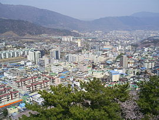

진해구(鎭海區)는 대한민국 경상남도 창원시의 동남부에 있는 구이다. 동쪽은 부산광역시 강서구와 북쪽은 성산구 · 김해시와 접하고, 서쪽은 마산만을 사이에 두고 마산합포구와 마주하며, 남쪽은 진해만을 사이에 두고 거제시와 마주한다. 한국 전쟁 당시 1950년부터 한국군과 UN군의 해군기지로 사용되면서 대한민국 해군의 중심기지로 자리잡았다. 진해항은 대한민국 해군의 모항(母港)이고, 해군사관학교와 여러 사령부가 위치하고 있으며, 군항도시와 벚꽃축제로 유명하다. 해군에 입대한 지원병들이 훈련을 받는 해군교육사령부도 진해에 있다. 진해에서는 도심과 지리적으로 인접하고 생활권이 같은 창원시와 통합하자는 움직임이 있어 왔으며, 2010년 정부의 행정구역 통합 추진에 따라 같은 해 7월 1일에 창원시·마산시와 통합하여 창원시 진해구로 개편되었다. 진해구는 옛 진해시청 청사를 그대로 구청으로 쓰고 있다.
